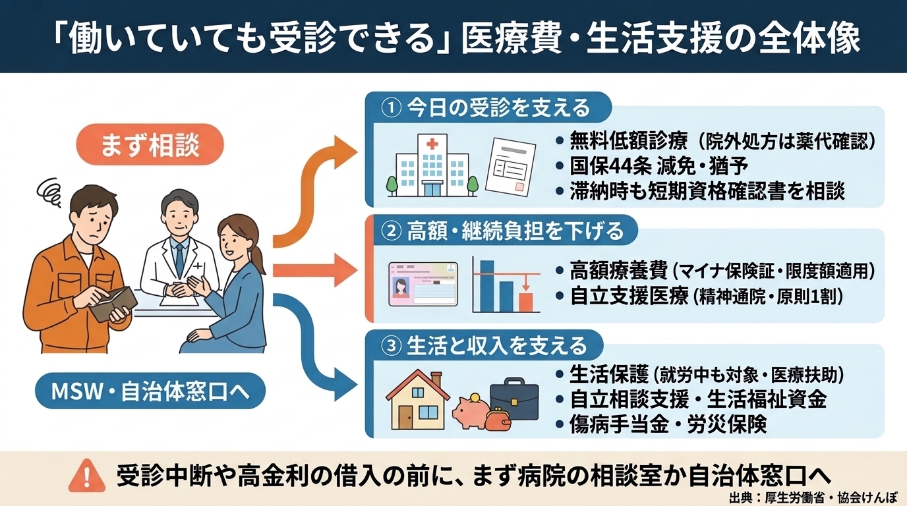

働いているのに受診できない患者への支援｜インフォグラフィック（原寸拡大）
画像をタップすると原寸のPNG画像が開きます。仕事をしていても手元資金がないときに検討できる公的支援を段階別に整理しています。個別の適用要件や手続きは、担当医・医療ソーシャルワーカー（MSW）・お住まいの自治体窓口等でご確認ください。
全体要約：働いているのに受診できないときの支援の全体像

画像をタップすると原寸のPNG画像が開きます。仕事をしていても手元資金がないときに検討できる公的支援を段階別に整理しています。個別の適用要件や手続きは、担当医・医療ソーシャルワーカー（MSW）・お住まいの自治体窓口等でご確認ください。
